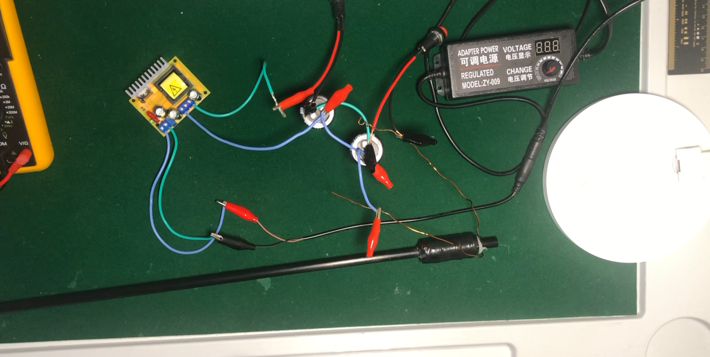
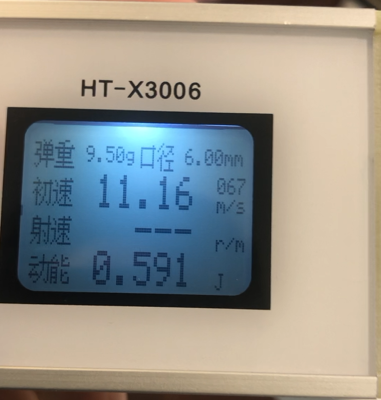

Independent R&D · Project 01
Electromagnetic Accelerator
A long-running engineering build that evolved through three physical versions—from a high-voltage test setup to a functional two-stage system informed by electromagnetic simulation, mechanical CAD, embedded timing, and measured results.

Three versions, one expanding test loop.
The project began as an experiment in electromagnetic acceleration and grew into a system-level build connecting circuit behavior, coil geometry, timing logic, mechanical repeatability, and measured physical performance.
Control the sequence, not just the circuit.
A multi-stage accelerator only works when each coil energizes at the useful part of the projectile’s motion. The central challenge was coordinating sequential electromagnetic stages while turning a loose experimental setup into a mechanically repeatable system.
- Model the magnetic system and evaluate coil-timing behavior.
- Create stage-control logic that could translate simulated timing into physical activation.
- Design supports and launcher geometry that kept the two-stage assembly aligned.
- Measure the result and preserve failed tests as engineering evidence.
Simulation, CAD, firmware, then the bench.
Electromagnetic simulation
I used ANSYS Maxwell 2D to study the electromagnetic field and support coil-timing optimization. The simulation became a design input for the embedded sequence rather than a standalone visualization.
Mechanical design and fabrication
I modeled support components in Fusion 360 and fabricated parts through 3D printing, improving the physical alignment and repeatability of the launcher.
Embedded control
Arduino stage-control logic coordinated sequential coil activation. The final documented build used four 400 V, 330 μF capacitors and a two-stage arrangement.
The failures stay in the record.
Each version answered a different question: whether the basic test loop worked, which sensing and circuit approaches were useful, and how simulation, CAD, and timing could connect in the final system.




Videos play on this page. Full channel: @SomeHeresyGaming ↗
A working system—and a better engineering method.
The documented build reached approximately 16 m/s with a 54.63 g projectile. More importantly, the project taught me to connect simulation assumptions to embedded timing, physical fabrication, repeatable testing, and failure analysis instead of treating those disciplines as separate tasks.